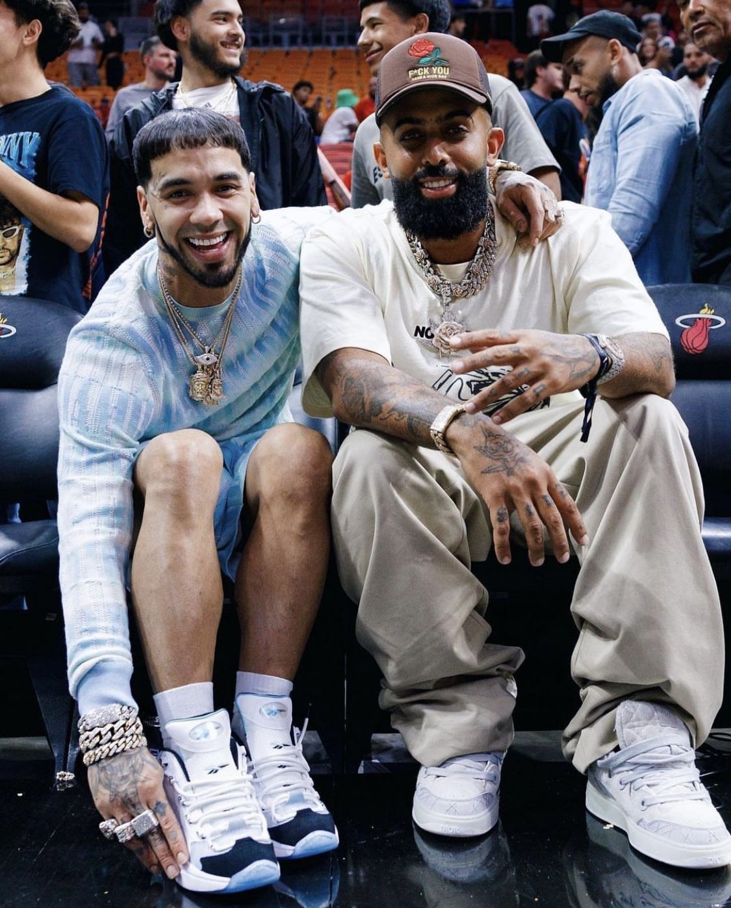
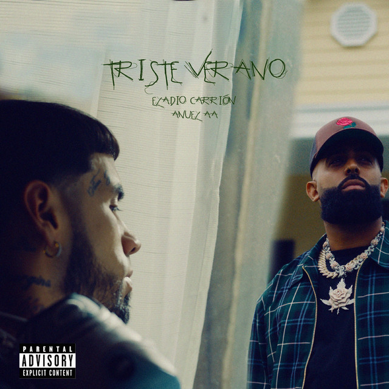

La colaboración entre Eladio Carrión y Anuel AA es una de las uniones interesantes dentro del trap latino. Ambos artistas comparten una forma de rapear directa y con mucha energía, lo que hace que sus canciones juntos tengan un estilo fuerte y muy característico del género urbano.

La colaboración entre Eladio Carrión y Anuel AA es una de las más destacadas dentro del trap latino. Ambos artistas comparten un estilo fuerte de rap y letras directas, lo que ha hecho que sus canciones juntos tengan mucha energía y popularidad entre los fans del género urbano.
Una de sus colaboraciones más conocidas es Triste Verano, lanzada en 2023. La canción combina trap y reguetón y habla sobre experiencias personales, relaciones y emociones después de una ruptura. El tema muestra la química musical entre los dos artistas y cómo sus estilos se complementan.
La unión entre Eladio y Anuel también refleja la conexión que existe dentro del movimiento del trap latino, donde muchos artistas colaboran entre sí para crear música que llegue a más público. Gracias a estas colaboraciones, ambos han logrado mantener su presencia en la escena urbana y seguir creciendo dentro de la industria musical.
Triste verano